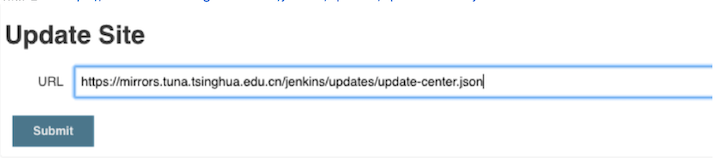
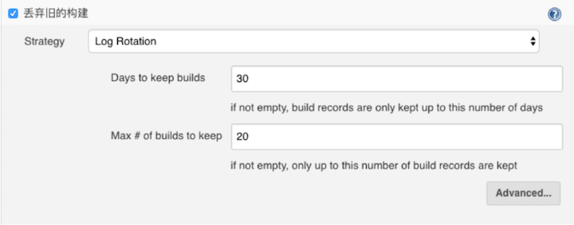

第一节 Jenkins 运维管理
Jenkins是一个自动化服务器，目前发展超过15年，比较成熟的CI工具（也可以CD) 能够实现自动化集成发布。建立好流水线后，期间无需专业运维人员介入，开发人员随时发布部署，任性！。
部分应用场景：
- 集成
svn/git客户端实现源代码下载检出 - 集成
maven/ant/gradle/npm等构建工具实现源码编译打包单元测试 - 集成
sonarqube对源代码进行质量检查（坏味道、复杂度、新增bug等） - 集成
SaltStack/Ansibie实现自动化部署发布 - 集成
Jmeter/Soar/Kubernetes/...... - 可以自定义插件或者脚本通过
jenkins传参运行 - 可以说
Jenkins比较灵活插件资源丰富，日常运维工作都可以自动化。
2.Jenkins 简介与部署 (How to install Jenkins)
虚拟机（Linux) 安装
Jenkins 安装准备
Jenkins使用java语言开发， 需要安装JDK，目前已支持jdk11.Jenkins的安装可以跨平台 (Win/Linux/Mac)- 部署／更新源：https://mirrors.tuna.tsinghua.edu.cn/jenkins
2-1 基于WAR包部署
Jenkins的web应用程序archive（war）包是可以在任何支持Java的操作系统上运行。 Jenkins最新 war包
- 将下载的war包放到jenkins的目录中（可以自定义)。
- 运行命令 java -jar jenkins.war启动。
- 此时可以看到Jenkins的启动日志，查看是否有异常。
- 通过浏览器访问http://localhost:8080。
注意：可以通过 --httpPort方式指定端口，java -jar jenkins.war -httpPort=9090。
2-2 基于MAC系统部署
- 下载软件包手动安装
brew install jenkins#安装jenkins最新版本brew install jenkins-lts#安装jenkinsLTS版本
2-3 基于Windows系统安装
下载软件包通过向导安装即可。
2-4 基于Linux系统部署（推荐）
- 下载软件包
rpm –ivh jenkins-2.150.3-1.1.noarch.rpm#安装service jenkins start#启动服务chkconfig jenkins on#开机自启
service jenkins start
service jenkins status
ps aux | grep java
基于Docker的安装部署
安装的详细步骤可以查看我原来的文章 Quick Start Jenkins on Docker
- 安装
docker环境 (exp: Install Docker Engine on CentOS - 准备好
plugn.txt作为Jenkins插件列表 (exp: plugins.txt) - 准备Dockerfile
FROM jenkins/jenkins:2.150.2
COPY plugins.txt /usr/share/jenkins/ref/plugins.txt
RUN /usr/local/bin/install-plugins.sh < /usr/share/jenkins/ref/plugins.txt
- 构建镜像
docker build -t jenkins:v20200630 . - 修改
var/lib/jenkins权限
$ cd /var/lib/
$ ls -la
drwxr-xr-x 2 root root 4096 Jan 21 03:13 jenkins
$ sudo chown 1000 jenkins/
- 启动
docker container:
docker run -d -p 8080:8080 -p 50000:50000 --env=JAVA_OPTS=-Djenkins.install.runSetupWizard=false -v /var/lib/jenkins:/var/jenkins_home jenkins:v20200630
$ docker ps
CONTAINER ID IMAGE COMMAND CREATED STATUS PORTS NAMES
1119ddfd13e6 jenkins:v20200531 "/sbin/tini -- /usr/…" 34 hours ago Up 34 hours 0.0.0.0:8080->8080/tcp, 0.0.0.0:50000->50000/tcp elegant_varahamihira
基于Jenkins-operator的安装部署
https://jenkinsci.github.io/kubernetes-operator/docs/installation/
3. Jenkins 的基本设置
Jenkins 基本配置
- 配置访问端口: 默认
8080 - 配置
JENKINS HOME: 默认/var/lib/jenkins配置启动用户 - 默认
Jenkins配置插件更新源: 默认官方源 -> 清华源/Jenkins中文社区源 - 安装
pipeline插件pipeline/Git／等插件
3-1 解锁Jenkins：
- 当您第一次访问Jenkins的时候，系统会要求您使用自动生成的密码对其进行解锁。
- 解锁秘钥可以通过
$JENKINS_HOME/secrets/initialAdminPassword文件获取。还可以通过在启动日志中获取。

3-2 自定义Jenkins插件
- 解锁
Jenkins之后再自定义Jenkins页面，您可以安装任何数量的插件作为初始化的一部分。 - 分别是安装建议的插件和选择要安装的插件（如果不确定要安装那些的时候可以选择此选项，灵活的自定义安装）。
- 插件安装多了也没关系，可以后面再
jenkins插件管理页面删除哦

3-3 配置更新站点
- 由于使用官方的站点速度相对很慢，这里采用清华大学的jenkins更新站点。
- 站点地址: https://mirrors.tuna.tsinghua.edu.cn/jenkins/updates/update-center.json

3-4 管理页面
系统管理页面包含系统管理、全局安全管理、全局工具配置、节点管理、授权管理、插件管理、系统备份管理、日志监控管理等

Jenkins 项目管理页面

Jenkins 构建页面

4. Jenkins 添加 Agent
Jenkins 是一个单 Master 多 Slave 的集群架构（以前大多叫 Slave，现在大多叫 Agent）。
Jenkins 的 Agent 大概分两种，一是基于 SSH 的，需要把 Master 的 SSH 公钥配置到所有的 Agent 宿主机上去。二是基于 JNLP 的，走 HTTP协议，每个 Agent 需要配置一个独特的密码。基于 SSH 的，可以由 Master 来启动；基于 JNLP 的，需要自己启动。
- 使用
JNLP协议添加SLAVE Jenkins配置固定SLAVE通信端口
安装Slave 节点
系统管理 -> 节点管理
创建完成后会出现slave节点启动的命令，下载agent.jar，然后启动服务。

启动命令
$ java -version
openjdk version "1.8.0_252"
OpenJDK Runtime Environment (build 1.8.0_252-b09)
OpenJDK 64-Bit Server VM (build 25.252-b09, mixed mode)
$ mkdir workspace && cd workspace
$ wget http://192.168.33.11:8080/jnlpJars/agent.jar
$ java -jar agent.jar -jnlpUrl http://192.168.33.11:8080/computer/hostmachine/slave-agent.jnlp -workDir "/home/vagrant/workspace"
# This is will keep running we need this run in the background
Run in back ground
$ cd workspace
$ vim startagent.sh
nohup java -jar agent.jar -jnlpUrl http://192.168.33.11:8080/computer/hostmachine/slave-agent.jnlp -workDir "/home/vagrant/workspace" &
source startagent.sh
5. Jenkins 用户与权限管理
操作添加删除更新用户。使用插件为用户分配项目授权。
用户认证方式
- 默认
Jenkins自带数据库 LDAP认证ActiveDirctory认证Gitlab/GitHub认证
用户管理
- 新增用户
- 删除用户
5-1 用户管理
- 配置用户接入入口: 系统管理->全局安全配置。
- 默认使用的是
Jenkins数据库存储。 - 可以选择集成
LDAP服务或者是Gitlab服务（需要安装插件后才会有）

5-2 用户管理权限管理
安装授权插件Role-Basecd Strategy用户项目授权
5-3 管理权限
- 系统设置->
Manage and Assign Roles->Manage Roles Global roles：添加用户和用户组，分配某个用户属于哪个用户组。Project roles：添加某个工程或某一组工程的用户或用户组Slave roles：添加某个节点或某一组节点的用户或用户组

凭据参数、字符参数、密码参数、布尔值参数、文件参数、文本参数、运行时参数、选项参数
- 系统设置->
Manage and Assign Roles->Assign Roles

5-4 全局权限

5-5 项目权限

6. Jenkins 凭据管理与应用
凭证可以是一段字符串如密码，私钥文件等，是Jenkins 进行受限操作时的凭据。比如 SSH 登录远程服务器，用户名，密码或 SSH key就是凭证。这些凭据不要明文写在 Jenkinsfile 中，Jenkins有专门管理凭证的地方和插件。
添加凭证后，需要安装"Credentials Binding Plugin"插件，就可以在 pipeline中使用withCredentials 步骤使用凭证了。
凭据管理
凭据可以用来存储需要密文保护的数据库密码、Gitlab密码信息。
凭据-> 系统-> 全局凭据
7. Jenkins 项目管理
简述 Jenkins 的项目类型，创建删除项目。使用视图对项目进行分类。
7-1 项目管理 —— 流水线项目管理
7-1-1 命名规范
业务名称-应用名称-应用类型_环境类型： jam-workzone-kops_TEST, 只有命名规范才方便管理项目。
7-1-2 新建项目

7-1-3 设置构建历史

7-1-4 选择参数化构建

7-1-5 设置Jenkinsfile
7-2 项目管理 —— 项目基本管理


7-3 项目管理 —— 项目文件夹
- 以业务简称为名，创建工程文件夹。将同一个业务的工程全部放到同一个文件夹中。
- 移动项目
7-4 项目管理 —— 视图
默认会创建一个all视图里面存放所有的项目。